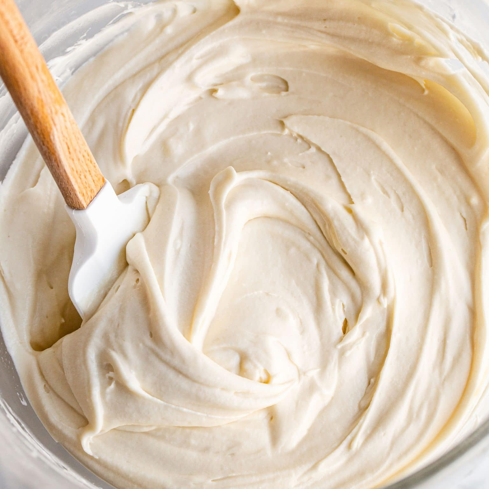

Cream Cheese Frosting
Home

Perfect Cream Cheese Frosting
This recipe is perfect for your cakes and pies. All those who taste it will imediately know it is homenmade.
It has a creamy, light, and fluffy texture that you will love.
Ingredients
- 8 oz cream cheese
- 1 stick of unsalted butter
- 2 tps vanilla
- 2 cups powdered sugar
Steps
- In the bowl of a stand mixer fitted with the paddle attachment, beat the cream cheese, butter, and vanilla on medium-high speed until very light, creamy, and smooth. On low speed, gradually add in the sugar and beat until fluffy. If you need a stiffer consistency for decorative piping, add more powdered sugar.
- Cream cheese frosting, alone or on cake or cupcakes, can sit at a cool room temperature for up to 8 hours before it should be refrigerated.
- The frosting can be made and transferred to an airtight container and stored in the fridge for up to 3 days, or in the freezer for up to 1 month. Bring to room temperature and re-whip with an electric mixer before using.